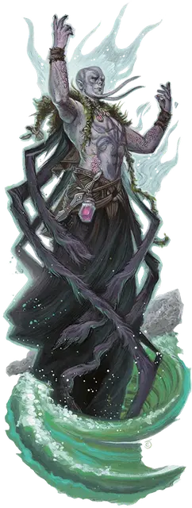

Жрец Кракена
Kraken Priest
Средний Гуманоид (Любая раса), любое мировоззрение

Класс Доспеха 10
Хиты 75 (10к8 + 30)
Скорость 30 футов, плавая 30 футов
| мод | спас | ||
|---|---|---|---|
| СИЛ | 12 | +1 | +1 |
| ЛОВ | 10 | +0 | +0 |
| ТЕЛ | 16 | +3 | +3 |
| мод | спас | ||
|---|---|---|---|
| ИНТ | 10 | +0 | +0 |
| МДР | 15 | +2 | +2 |
| ХАР | 14 | +2 | +2 |
Навыки Восприятие +5
Сопротивление урону дробящий, колющий, рубящий от немагических атак
Чувства пассивное Восприятие 15
Опасность 5 (1800 опыта)
Бонус мастерства +3
Среда обитания Побережье, Под водой
Особенности
Языки. Любые два языка.
Амфибия. Жрец может дышать и воздухом и под водой.
Использование заклинаний. . У жреца базовой характеристикой является Мудрость (Сл спасброска от заклинания 13, +5 к попаданию атаками заклинаниями). Он может накладывать следующие заклинания без использования материальных компонентов:
• Неограниченно: приказ [command], сотворение или уничтожение воды [create or destroy water].
• 3/день каждое: власть над водами [control water], тьма [darkness], подводное дыхание [water breathing], хождение по воде [water walk].
• 1/день каждое: призыв молнии [call lightning], Эвардовы чёрные щупальца [Evard’s black tentackles].
Действия
Громовое касание. Рукопашная атака заклинанием: +5 к попаданию, досягаемость 5 футов, одно существо. Попадание: урон звуком 27 (5к10 + 4).
Голос кракена (Перезаряжается после короткого или продолжительного отдыха). Кракен громовым голосом говорит через священника, слышимый в пределах 300 футов. Существа на выбор священника, которые может услышать слова кракена (которые понимают на языках Бездны, Инфернальном или Первичном) должны преуспеть в спас–броске Харизмы Сл 14 или будут напуганы на 1 минуту. Напуганная цель может повторить спасбросок в конце каждого своего хода, чтобы при успехе завершить для себя этот эффект.
Описание
Кракен может казаться богоподобным для народов, познавших его ярость. Те, кто принимает его силу за божественную мощь и те, кто стремится усмирить монстра почитанием, иногда получают силу, чтобы служить жрецами кракена.
Кракен может смутно знать мысли жреца кракена, если они оба находятся на одном и том же плане существования, и может подавить личность жреца и контролировать его. Жрецы кракена могут, таким образом, быть глазами и ушами своего повелителя, и когда кракену есть что сказать, жрец становится его рупором.
Каждый жрец кракена претерпевает изменение внешности, которое отражает влияние кракена, хотя каждый отличается тем, какую награду ему оказывают. У одного жреца кракена может быть чёрные как чернила глаза и щупальце с присосками вместо языка, в то время как у другого неприметное лицо и тело, покрытое глазами и ртами сочащимися морской водой. Эти ужасающие проявления усиливаются, когда кракен овладевает своим подчиненным, чтобы произнести свои страшные заявления.